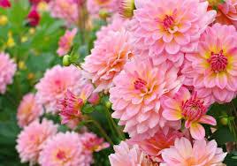
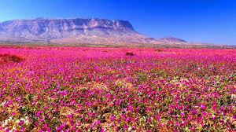

FLORA DEL PLANETA


¿QUE ES LA FLORA?
Árboles: pinos, robles, ceibas.
Arbustos: lavanda, rosal silvestre.
Hierbas: pasto, albahaca.
Flores: orquídeas, girasoles.
¿COMO SE ADAPTAN LAS PLANTAS A SU ENTORNO?
Algunas almacenan agua (cactus), otras tienen raíces profundas o hojas grandes para captar luz.
¿PORUQE ES TAN IMPORTANTE LA VEGETACION?
Produce oxígeno, evita la erosión, regula el clima, y proporciona alimentos y medicinas.
La fauna es el conjunto de todos los animales que habitan en un lugar determinado, ya sea una región, un país o todo el planeta. Estos animales pueden ser salvajes o domésticos, grandes o pequeños, terrestres, acuáticos o aéreos. La fauna forma parte esencial del equilibrio natural del mundo, ya que cada especie cumple una función específica dentro del ecosistema: algunas polinizan plantas, otras dispersan semillas, controlan plagas o forman parte de la cadena alimenticia.
Existen muchos tipos de animales en el planeta: mamíferos (como los elefantes), aves (como los cóndores), reptiles (como las tortugas), anfibios (como las ranas), peces y insectos, entre muchos otros. Todos ellos viven en diferentes hábitats y están adaptados a su entorno.
Sin embargo, muchas especies animales están actualmente en peligro de extinción, es decir, corren el riesgo de desaparecer para siempre. Esto sucede por varias causas, principalmente provocadas por el ser humano, como la destrucción de hábitats, la contaminación, la caza ilegal, el tráfico de especies y el cambio climático. La pérdida de biodiversidad no solo afecta a los animales, sino también a los ecosistemas completos y, por lo tanto, a la vida humana.